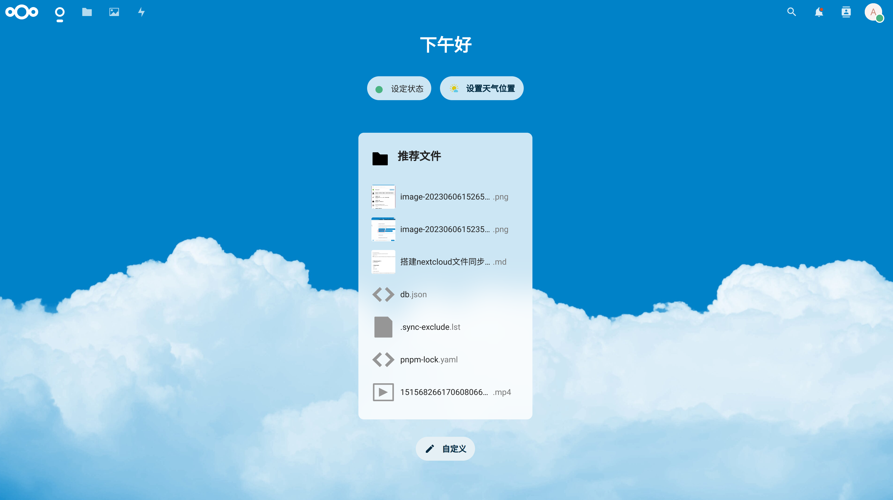
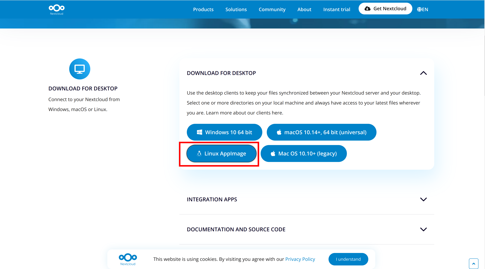
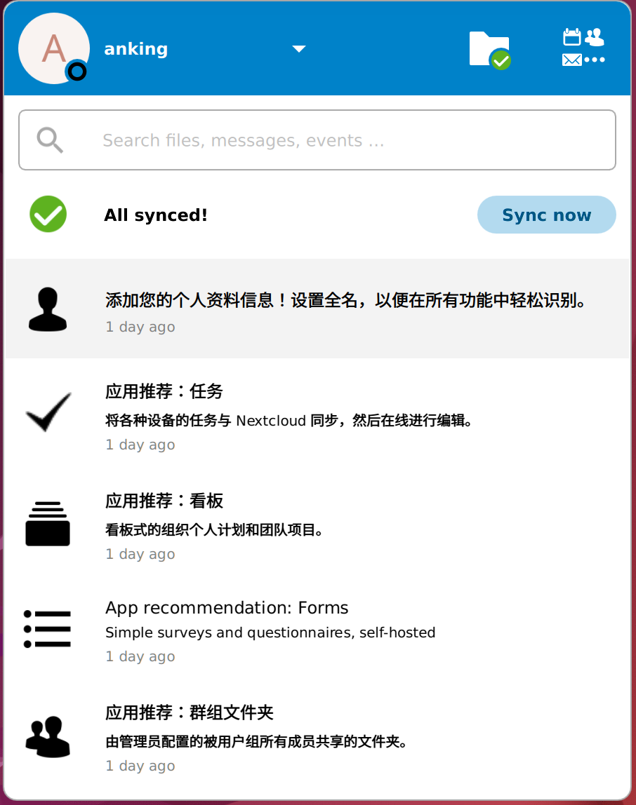
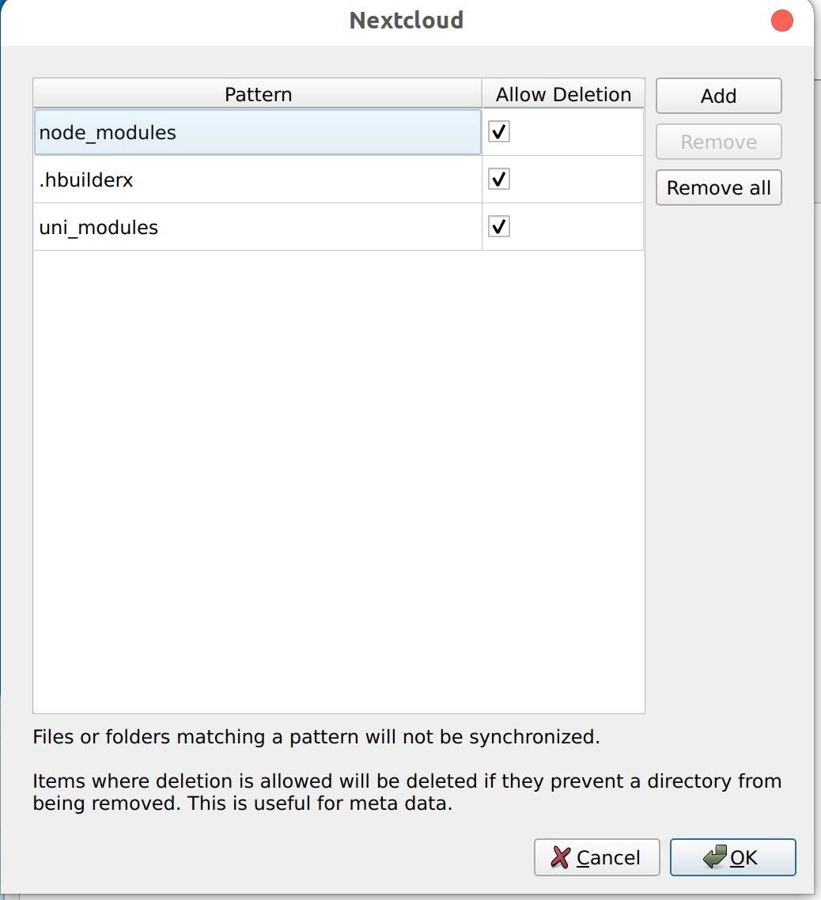

搭建nextcloud文件同步服务器
搭建 Nextcloud 服务器
服务器版本：Ubuntu22.04
Nextcloud官方指南：Nextcloud Doc
安装 Nextcloud
更新软件包索引
1
sudo apt update
安装 Apache、MySQL、PHP
Nextcloud 需要一个 Web 服务器，这里使用 Apache, 一个数据库服务器，MariaDB 或者 MySQL，以及 PHP, 可以使用以下命令安装所需的组件：1
2
3sudo apt install apache2
sudo apt install mysql-server
sudo apt install php-fpm php-mysql php-zip php-gd php-mbstring php-curl php-xml php-imagick修改状态：sudo systemctl status|start|stop|restart|enable|disable apache2
站点目录：/var/www
安装目录：/etc/apache2
全局配置：/etc/apache2/apache2.conf
坚挺端口：/etc/apache2/ports.conf
创建 Nextcloud 的数据库和用户
1
sudo mysql -u root -p
进入数据库后执行
1
2
3
4
5
6
7
8# 创建新用户
CREATE USER 'username'@'localhost' IDENTIFIED BY 'password';
# 创建nextcloud数据库
CREATE DATABASE nextcloud;
# 给用户nextcloud全部权限
GRANT ALL PRIVILEGES ON nextcloud.* TO 'username'@'localhost';
FLUSH PRIVILEGES;
exit;配置 Apache
1
sudo vim /etc/apache2/apache2.conf
在最后面添加：
1
2AddType application/x-httpd-php .php .html .htm
AddDefaultCharset UTF-8然后重启服务：
1
sudo systemctl restart apache2
下载 Nextcloud 服务器版
1
2
3
4
5
6cd /var/www/html
sudo wget https://download.nextcloud.com/server/releases/latest.zip
sudo unzip latest.zip
sudo chown -R www-data:www-data nextcloud/
sudo chmod 777 nextcloud -Rf
sudo rm latest.zip接下来重启 Apache，然后输入
http://server_ip/nextcloud就可以访问 Nextcloud。

修改 Nextcloud 数据的存放位置
停止 Apache 服务：
1
sudo systemctl stop apache2
将现有数据目录复制到新的位置。假设当前数据目录位于
/var/www/html/nextcloud/data将其复制到新的位置（例如：/new/data/path）：1
sudo cp -rp /var/www/html/nextcloud/data /new/data/path
修改 Nextcloud 的配置文件
config.php将数据目录路径更新为新的位置。1
sudo vim /var/www/html/nextcloud/config/config.php
在 config.php 文件中，找到 datadirectory 参数，并将其值修改为新的数据目录的路径。
1 | 'datadirectory' => '/new/data/path', |
保存并关闭文件
更新文件权限和所有权，确保 Nextcloud 可以访问新的数据目录
1
2sudo chown -R www-data:www-data /new/data/path
sudo chmod -R 750 /new/data/path这将将新的数据目录设置为 Nextcloud 用户（通常为
www-data）的所有权，并设置适当的权限。启动 Nextcloud 服务
1
sudo systemctl start apache2
优化 Nextcloud
启用缓存
同时开启 APCu 和 Redis 缓存
安装和配置 APCu：
安装 APCu 扩展：
1
2sudo apt update
sudo apt install php-apcu配置 APCu 扩展：
编辑 PHP 配置文件：
1
2sudo nano /etc/php/<version>/apache2/php.ini # 如果使用 Apache 服务器
sudo nano /etc/php/<version>/fpm/php.ini # 如果使用 PHP-FPM 或 Nginx 服务器添加或修改一下行来启用 APCu：
1
2extension=apcu.so
apc.enable_cli=1保存并关闭文件
安装和配置 Redis：
安装 Redis 服务器：
1
sudo apt install redis-server
配置 Redis 服务器：
编辑 Redis 配置文件1
sudo vim /etc/redis/redis.conf
在文件中找到
supervised行，将其值改为systemd1
supervised systemd
- 重启 Redis 服务器
1
sudo systemctl restart redis-server
安装 Redis PHP 扩展
1
sudo apt install php-redis
配置 Nextcloud 使用 APCu 和 Redis：
编辑 Nextcloud 的配置文件config.php1
sudo vim /var/www/html/nextcloud/config/config.php
添加以下行来配置 APCu 和 Redis
1
2
3
4
5
6
7
8
9'memcache.local' => '\\OC\\Memcache\\APCu',
'memcache.distributed' => '\\OC\\Memcache\\Redis',
'redis' => array(
'host' => 'localhost',
'port' => 6379,
'password' => 'Shadow934.',
'read_timeout' => 0.0,
'dbindex' => 0,
),重启 Web 服务器
1
sudo systemctl restart apache2
其他优化
启用文件缓存：
在 Nextcloud 的配置文件config.php中，设置'filelocking.enabled' => true, 'memcache.locking' => '\OC\Memcache\Redis',。这将启用文件锁定并将其存储在 Redis 中，提高并发访问时的性能。调整文件扫描间隔：
在 Nextcloud 的配置文件config.php中，设置'filesystem_check_changes' => 1,。这将减小文件扫描的时间间隔，使 Nextcloud 更快地检测到外部文件系统的更改。使用固态硬盘（SSD）：
将 Nextcloud 的数据目录和数据库放在固态硬盘上，以提高读写性能和响应速度。配置缓存和压缩选项：
在 Nextcloud 的配置文件config.php中，启用'enable_previews' => true, 'enable_avatars' => true, 'enable_local_caching' => true,。这将启用缓存和预览功能，提高文件和图像访问速度。定期优化数据库：
使用数据库优化工具，如 phpMyAdmin 或 MySQLTuner，对 Nextcloud 使用的数据库进行定期优化，以提高数据库性能和查询速度。配置 Web 服务器：
针对 Nextcloud 进行适当的 Web 服务器（如 Apache 或 Nginx）配置优化，例如启用压缩、启用缓存、调整并发连接等，以提高 Web 服务器的性能和响应速度。启用 opcache, 提高 PHP 的运行速度
1
sudo vim /etc/php/8.1/apache2/php.ini
编辑
php.ini文件，添加如下代码1
2
3
4
5
6opcache.enable=1
opcache.interned_strings_buffer=8
opcache.max_accelerated_files=10000
opcache.memory_consumption=128
opcache.save_comments=1
opcache.revalidate_freq=1
最终添加的 config.php 文件配置如下：
1 | 'filelocking.enabled' => true, |
问题
trusted_domains 问题
当服务器 ip 或域名变化之后，需要修改 config.php 文件中的 trusted_domains 将旧的域名或 ip 修改为新的，或者直接加入新的 ip 或域名。
Ubuntu 连接 Nextcloud 服务
下载 Linux 版本的 Nextcloud
赋予 Nextcloud 可执行权限，并运行
1
2sudo chmod +x Nextcloud-3.8.2-x86_64.AppImage
./Nextcloud-3.8.2-x86_64.AppImage登陆并配置同步文件夹
可以设置忽略同步的文件：